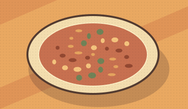

Dinner
Turkey & black bean chili
A smoky, pantry-friendly pot that cooks tomorrow’s lunch and a second dinner at the same time.
30 min · 3 servings

Ingredients
- 1 lb Lean ground turkeyWalmart
- ½ onion Yellow onionsWalmart
- 1 tsp Canola oilWalmart
- 1 can, drained No-salt-added black beansWalmart
- 1 can, with juices No-salt diced tomatoesWalmart
- 1 packet, or to taste Mild chili seasoningWalmart
- ½ cup Reduced-sodium chicken brothWalmart
- ¼ cup, grated Sharp cheddarWalmart
Retailer links are options, not a live stock check.
Make it
- Heat the oil over medium. Brown the ground turkey with the chopped onion, breaking up the meat.
- Add beans, tomatoes, chili seasoning and broth. Simmer 15–20 minutes; cook the turkey to 165°F.
- Top with cheddar. Refrigerate one portion for lunch and freeze one for the chili-loaded potato.